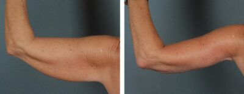
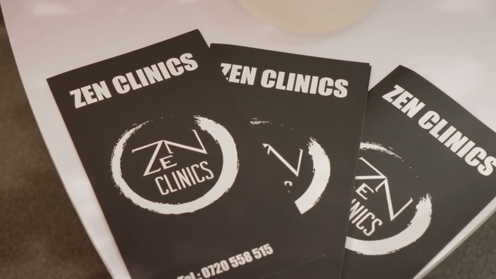

Contur
Poate fi potrivită pentru zone în care proporția sau fermitatea pot fi îmbunătățite printr-un plan medical.

Corporal
Liftingul bratelor este recomandat atunci cand excesul de piele afecteaza conturul si proportia acestei zone.
Corporal
Liftingul bratelor este recomandat atunci cand excesul de piele afecteaza conturul si proportia acestei zone.
Abordarea este structurală și personalizată, cu atenție la siluetă, confort și proporții. Fiecare recomandare pornește de la evaluarea țesuturilor și a obiectivului realist.
Cadru vizual



Potrivire
Indicația finală se stabilește în urma consultației. Punctele de mai jos sunt orientative și nu înlocuiesc evaluarea medicului.
Poate fi potrivită pentru zone în care proporția sau fermitatea pot fi îmbunătățite printr-un plan medical.
Se iau în calcul greutatea, elasticitatea pielii, istoricul medical și stilul de viață.
Opțiunea potrivită se stabilește după consultație și după explicarea limitelor procedurii.
Experiență
Discuție despre obiective, istoric medical, indicații și limite.
Analiză personalizată a anatomiei, proporțiilor și contextului pacientului.
Recomandări clare, pași explicați și așteptări formulate prudent.
Tratamentul sau intervenția se desfășoară conform planului, cu monitorizare ulterioară.
Obiective
Fiecare obiectiv este discutat realist, în funcție de anatomie, indicație, tehnică și evoluția individuală.
Poate contribui la o definire mai coerentă a conturului corporal.
Urmărește armonie, proporție și o recuperare planificată atent.
Rezultatul depinde de anatomie, indicație, vindecare și recomandările post-procedură.
Detalii importante
Datele despre durată, recuperare, indicații sau contraindicații sunt păstrate doar acolo unde apar în conținutul existent și trebuie validate în consultație.
Lifting brate se discută în funcție de anatomie, obiectiv, istoric medical și recomandarea medicului.
De completat cu informații medicale validate despre durată, pregătire, recuperare și recomandări post-procedură.
De completat cu informații medicale validate despre riscuri, limite, indicații și contraindicații relevante.
FAQ
Decizia se ia în urma unei consultații, după evaluarea anatomiei, a istoricului medical și a obiectivelor. Informațiile de pe pagină nu înlocuiesc recomandarea medicului.
Recuperarea diferă în funcție de procedură și de fiecare pacient. Dacă există informații specifice în textul medical al paginii, acestea trebuie discutate și validate în consultație.
Nu. Rezultatele pot varia în funcție de anatomie, indicație, vindecare și respectarea recomandărilor medicale.
Se discută obiectivul estetic sau funcțional, opțiunile posibile, limitele procedurii, riscurile, recuperarea și pașii următori.
Ritmul controalelor se stabilește în funcție de procedură și evoluția individuală. Echipa medicală oferă recomandări personalizate după intervenție sau tratament.
Consultație
Discută cu echipa ZEN Clinics despre opțiunile potrivite, limitele procedurii și pașii recomandați pentru cazul tău.
Programează o consultație